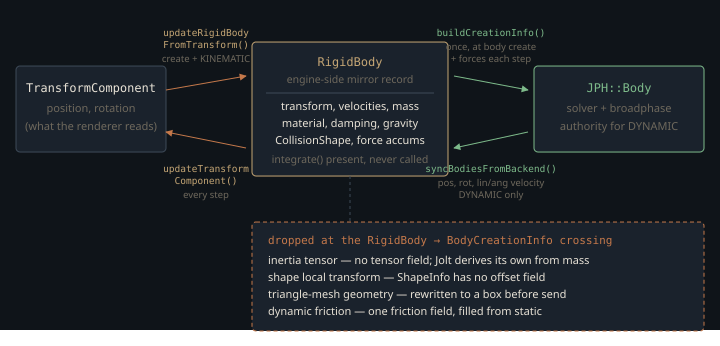

Monograph · Tree · ← Module hub · Bodies & shapes
physics
Bodies & shapes
RigidBody, all shape types, factory, PhysicsComponent.
The body that does not simulate
`RigidBody` reads like a textbook rigid-body integrator: mass and inverse mass, a local inertia tensor and its inverse, force and torque accumulators, damping, a sleep timer, and an `integrate(float)` that advances velocity from force, damps it, advances position, then integrates the orientation quaternion — semi-implicit Euler by hand.
// Semi-implicit Euler integrationohao/physics/dynamics/rigid_body.cpp:248Nothing in the tree calls it. `grep -rn "integrate(" ohao/ examples/ tests/` returns exactly two hits: the declaration and the definition. The `integrateAngularVelocity` helper in `physics_math.hpp` is in the same state, and — unlike the classic "unused function, live formula" trap — no inlined copy of that loop exists anywhere else, since `std::pow(1.0f - …, deltaTime)` and `glm::angleAxis` appear nowhere in `ohao/physics/` outside those two bodies. The advance that actually happens is Jolt's:
// 4. Step the backend (Jolt handles broadphase + narrowphase + solving)ohao/physics/world/physics_world.cpp:321So the model is not "OHAO simulates rigid bodies, with Jolt as an optional accelerator". `RigidBody` is a **mirror record**: a backend-neutral description converted into a Jolt body once, then overwritten from Jolt every step.
// For dynamic bodies, backend is the authorityohao/physics/world/physics_world.cpp:515Everything else here follows from that. The useful questions are not "how does the integrator work" but "what fails to cross the mirror boundary" and "what happens when you write to the side that is not the authority".
What survives the crossing
`PhysicsWorld::buildCreationInfo` is the one function turning a `RigidBody` plus its `CollisionShape` into the backend-neutral `BodyCreationInfo` / `ShapeInfo` pair. Scalars cross intact — position, rotation, mass, static friction, restitution, both damping coefficients, gravity enable and per-body gravity scale — and `RigidBodyType` maps onto the backend `MotionType`.
info.mass = body->getMass();ohao/physics/world/physics_world.cpp:555Four of the omissions matter.

The **inertia tensor** is the first. `ShapeInfo` describes geometry only, and `BodyCreationInfo`'s scalar `mass` is the whole of what the backend learns about mass distribution — neither struct has a tensor field. So the Jolt backend overrides the mass and lets the solver rebuild the inertia from the shape it was handed:
bodySettings.mOverrideMassProperties = JPH::EOverrideMassProperties::CalculateInertia;ohao/physics/backend/jolt/jolt_backend.cpp:547The **shape's local offset** is the second — `CollisionShape` stores a local position and rotation, but `ShapeInfo` has no offset field, so an offset or compound shape is not expressible at this boundary (`setLocalTransform` has no callers, which is consistent). The third is triangle-mesh geometry. The fourth is **dynamic friction**: `PhysicsMaterial` stores it independently of the static coefficient and `RigidBody::getDynamicFriction` reads it back, but `BodyCreationInfo` has one `friction` field and `buildCreationInfo` fills it from the static one, so Jolt runs a single coefficient for both regimes.
info.friction = body->getStaticFriction();ohao/physics/world/physics_world.cpp:556The triangle mesh that becomes a box
Both ends of the mesh path are finished. `ShapeInfo` has a one-call helper pointing it at caller-owned vertex and index spans:
void setMesh(std::span<const glm::vec3> vertices, std::span<const uint32_t> indices) noexcept {ohao/physics/backend/physics_backend.hpp:137and the Jolt backend consumes exactly that to build a real `JPH::MeshShape`:
JPH::MeshShapeSettings settings(triangles);ohao/physics/backend/jolt/jolt_backend.cpp:1520The middle is not wired. `buildCreationInfo` sets `Type::MESH`, then two comment lines later overwrites it with a box sized from the shape's own `getSize()`:
// Mesh data is transient - backend must copy during createBodyohao/physics/world/physics_world.cpp:614The stated reason has expired: `TriangleMeshShape` owns its vertex and index vectors for the shape's whole lifetime, exactly the guarantee `ShapeInfo` asks of the caller. Forwarding the spans is still not a drop-in fix, though. Jolt's `MeshShape` reports `MustBeStatic()` true and its `GetMassProperties()` returns a default, zero mass — "Object should always be static", says the comment on it — while `buildCreationInfo` maps DYNAMIC and KINEMATIC bodies through the same switch. A wired mesh path would serve static level geometry and would have to refuse everything else.
Nothing exercises the path either way. The only `setMesh` call in the tree is a unit test checking the struct's own fields, and no actor reaches `createCollisionShapeFromModel`: its sole caller is `ComponentFactory::setupPhysicsShapeFromMesh`, which has no call sites of its own.
physics->createCollisionShapeFromModel(*model);ohao/scene/component/component_factory.cpp:575The other three routes to a `TriangleMeshShape` — `ShapeFactory::createTriangleMesh`, `createQuad`, `createIcosphere` — are uncalled as well. The box fallback is a trap set for the first caller, not a defect anyone is currently hitting.
Two converters, and they disagree
`PhysicsComponent` carries a *second* `CollisionShape → ShapeInfo` converter, used when a shape is swapped on a body that already exists in the backend. It handles the awkward cases differently: unsupported types, triangle meshes included, become a fixed unit cube.
info.halfExtents = glm::vec3(0.5f);ohao/physics/components/physics_component.cpp:262So a mesh body gets a box with half-extents `shape->getSize() * 0.5f` at creation — a number the next section shows is *not* the mesh's bounds size — and a 1×1×1 box if the same shape is re-assigned later. The two also disagree on planes: `PhysicsComponent` forwards the authored normal and distance, `buildCreationInfo` hardcodes +Y and never touches `planeDistance`. The divergence is invisible because the Jolt shape factory reads neither field and always builds the same thing:
JPH::BoxShapeSettings settings(JPH::Vec3(100.0f, 0.01f, 100.0f));ohao/physics/backend/jolt/jolt_backend.cpp:1502A 200 × 0.02 × 200 slab centred on the body. No authored plane survives at any layer: orientation and offset are both discarded, and even the +Y, zero-distance case runs out of surface 100 m from the body origin.
The AABB constructor that means the other thing
`math::AABB` has exactly one two-vector constructor, and it takes a centre and half-extents, not two corners:
AABB(const glm::vec3& center, const glm::vec3& halfExtents)ohao/physics/utils/physics_math.hpp:126`BoxShape` and `SphereShape` honour that. The other four shape types do not: `CapsuleShape`, `CylinderShape`, `PlaneShape` and `TriangleMeshShape` each compute a genuine min and max corner and pass them to the same constructor.
return math::AABB(minPoint, maxPoint);ohao/physics/collision/shapes/capsule_shape.hpp:53return math::AABB(worldPosition - totalExtent, worldPosition + totalExtent);ohao/physics/collision/shapes/cylinder_shape.hpp:50return math::AABB(pointOnPlane - extent, pointOnPlane + extent);ohao/physics/collision/shapes/plane_shape.hpp:60m_bounds = math::AABB(minBounds, maxBounds);ohao/physics/collision/shapes/triangle_mesh_shape.hpp:254Writing $p_{\min}$ and $p_{\max}$ for the true corners, the constructor produces
— an extent that drops $p_{\min}$ entirely. The box is the right size only for a shape symmetric about its local origin, and even then it sits in the wrong place. The size is what leaks: `TriangleMeshShape::getSize()` returns $2p_{\max}$, exactly the value `buildCreationInfo` halves into the box-fallback half-extents. A mesh spanning $[0, 2]$ gets a collision box twice too large; one living entirely in negative coordinates gets *negative* half-extents.
Where the inertia tensor still matters, and which copy of it you get
The tensor never reaches Jolt, so its only consumers are engine-side — and they do not all consume the same tensor. `applyImpulse`'s angular term and the dead integrator take the **inverse** through `getWorldInverseInertiaTensor`,
return inertia::transformToWorldSpace(m_invInertiaTensor, m_rotation);ohao/physics/dynamics/rigid_body.cpp:79while `getKineticEnergy` and `getAngularMomentum` push the **forward** tensor through the same `inertia::transformToWorldSpace` helper, giving $I_{\text{world}} = R\,I_{\text{local}}\,R^{\mathsf{T}}$ — the right quantity for $I\omega$ and $\tfrac{1}{2}\,\omega^{\mathsf{T}} I \omega$, but not the matrix above.
glm::vec3 angularMomentum = worldInertia * m_angularVelocity;ohao/physics/dynamics/rigid_body.cpp:320In both, $R$ is the 3×3 matrix of the body's orientation quaternion and $I_{\text{local}}$ is the diagonal tensor `calculateInertiaFromShape` dispatches per shape type — closed forms for box, sphere, cylinder, capsule; an AABB-derived box otherwise.
localInertia = inertia::calculateCapsuleTensor(m_mass, radius, height);ohao/physics/dynamics/rigid_body.cpp:121There is a second surprise here. Six functions in `ohao::physics::inertia` — the four shape tensors plus `transformToWorldSpace` and `calculateInverse` — are each defined **twice**, once in `physics_math.cpp` and once in `physics_constants.cpp`, under the same namespace and signature, both files swept into `ohao_physics` by a recursive `file(GLOB)`. And they disagree: one treats the cylinder's spin axis as Y, the other as Z, and the capsule is either an 80/20 cylinder-plus-sphere mass split or simply a cylinder of total height $h + 2r$.
float sphereMass = mass * 0.2f; // 20% for spheresohao/physics/utils/physics_math.cpp:50float totalHeight = height + 2.0f * radius;ohao/physics/common/physics_constants.cpp:58The sharper pair is `calculateInverse`. One copy is a bare `glm::inverse`; the other special-cases diagonal tensors and returns **0** for any diagonal entry at or below `EPSILON`. A degenerate axis therefore comes back as infinite inertia — no angular response at all — instead of the infinity or NaN you would notice.
return glm::inverse(tensor);ohao/physics/utils/physics_math.cpp:63result[0][0] = (glm::abs(tensor[0][0]) > constants::EPSILON) ? 1.0f / tensor[0][0] : 0.0f;ohao/physics/common/physics_constants.cpp:82Nothing in the sources or the CMake files picks a winner, but the outcome is not ambiguous in practice: every binary in the tree gets the `physics_math.cpp` set. Disassemble `build/interactive`, `build/cornell_box`, `build/model_viewer` or `build/renderer_test` and `calculateCapsuleTensor` calls `calculateCylinderTensor`, then `calculateSphereTensor`, then `operator+` — the 80/20 form — while `calculateInverse` is nothing but a call into `glm::inverse`. The `physics_constants.cpp` copies never link at all: `inertia::combine`, the one symbol that file does not share, is absent from all four symbol tables. So the live cylinder spin axis is Y.
That uniformity was not chosen, and the blast radius is small only because the tensor is engine-side-only. It stops being small the moment someone wires the tensor through to `BodyCreationInfo`.
Writing to the wrong side of the mirror
Force works; impulse does not. `applyForce` deposits into `m_accumulatedForce` and `m_accumulatedTorque`, which `stepFixed` pushes to the backend before stepping and `syncBodiesFromBackend` clears after — a clean one-step accumulator. `applyImpulse` edits `m_linearVelocity` and `m_angularVelocity` in place instead, and `PhysicsComponent` forwards straight into it without touching the backend.
m_rigidBody->applyImpulse(impulse, relativePos);ohao/physics/components/physics_component.cpp:200For a DYNAMIC body that already has a Jolt counterpart, those velocities are overwritten from Jolt on the next sync, so the impulse evaporates. Two routes escape that. `PhysicsWorld::applyRadialImpulse` bypasses `RigidBody` and calls `m_backend->applyImpulse` on the handle directly. And an impulse applied *before* the backend body exists does land, because body creation pushes the mirror's velocity forward:
// Push any pending velocity set before the backend body existedohao/physics/world/physics_world.cpp:495That window is real: `PhysicsComponent::createRigidBody` registers with the backend only when a shape is already attached, so a body whose shape arrives later has no Jolt counterpart until the next `stepFixed`, and anything `applyImpulse` wrote in between becomes its initial velocity.
Reads are lossy in the other direction. Both velocity setters clamp:
m_linearVelocity = math::clampLength(velocity, constants::MAX_LINEAR_VELOCITY);ohao/physics/dynamics/rigid_body.cpp:156and the sync path calls those same setters with Jolt's values (100 m/s linear, 50 rad/s angular). The clamped result is never pushed back, so a body genuinely travelling at 150 m/s reads back as 100 while the solver keeps the true value.
Sleep has the same shape of bug. `IPhysicsBackend::isAwake` exists and Jolt implements it over `BodyInterface::IsActive`, but nothing pulls it into the mirror, and `RigidBody::updateSleepState` — the mirror's own kinetic-energy timer — has no callers either. `m_isAwake` starts life `true`:
bool m_isAwake{true};ohao/physics/dynamics/rigid_body.hpp:225and in a running scene the only thing that clears it is `setType()`'s STATIC branch (a profile restore can too, but only by replaying a stored flag). So the active-body scan counts every non-static body from construction, moving or not, and never counts a static one:
if (body && body->isAwake()) {ohao/physics/world/physics_world.cpp:277which makes `sleepingBodies`, computed as total minus active, the STATIC body count — a measure of how much level geometry the scene has, not of anything Jolt decided.
The mirror could have been deleted — components could hold a `BodyHandle` and call straight through to `IPhysicsBackend`, which is what most engines with a third-party solver do. Keeping `RigidBody` buys a body description the null backend, the profile snapshot system and the force registry can all read with no solver present, and lets forces be authored before any Jolt body exists. The cost is exactly the drift above: every field has two homes and only some are reconciled each step.
Contracts
- A body with no `CollisionShape` never enters the backend: both `createRigidBody`'s registration and `syncPendingBodiesToBackend` skip shapeless bodies, so it stays a mirror record and never moves. Setting the shape later is fine; the next step picks it up.
- `Scene` owns the `PhysicsWorld`, injects it into each `PhysicsComponent`, then calls `initialize()`. Reverse that order and `createRigidBody` finds no world and silently does nothing until `setPhysicsWorld` runs.
- Scale is deliberately *not* synced from `TransformComponent`; the shape is baked into Jolt at creation, so it must be authored at final size (`createBoxShape` with pre-scaled half-extents).
- Capsule height means total height including both caps, consistently: the shape derives $h_{\text{cyl}} = \max(0, h - 2r)$ and the Jolt converter re-derives the same half-cylinder height from `info.height`. Passing a cylinder-only height silently shortens the capsule by $2r$.
- Mass is clamped to $[10^{-3}, 10^{6}]$ kg for non-static bodies and forced to zero for STATIC. The density-driven auto-mass path (AABB volume × material density, default 1000 kg/m³) is reachable only after a STATIC→DYNAMIC flip — the only way `m_mass` reaches zero on a movable body — and it inherits the AABB bug above: only box and sphere shapes hand it a correct volume.
- `CollisionShapeLike`, the C++20 concept in `collision_shape.hpp`, constrains nothing today; every dispatch goes through the virtual `ShapeType` switch instead.
Source files
ohao/physics/dynamics/rigid_body.cppohao/physics/world/physics_world.cppohao/physics/backend/jolt/jolt_backend.cppohao/physics/backend/physics_backend.hppohao/scene/component/component_factory.cppohao/physics/components/physics_component.cppohao/physics/utils/physics_math.hppohao/physics/collision/shapes/capsule_shape.hppohao/physics/collision/shapes/cylinder_shape.hppohao/physics/collision/shapes/plane_shape.hppohao/physics/collision/shapes/triangle_mesh_shape.hppohao/physics/utils/physics_math.cppohao/physics/common/physics_constants.cppohao/physics/dynamics/rigid_body.hppohao/physics/collision/shapes/collision_shape.hppohao/physics/collision/shapes/shape_factory.hppohao/physics/collision/shapes/box_shape.hppohao/physics/collision/shapes/sphere_shape.hppohao/physics/components/physics_component.hppParent hub for the full pipeline narrative; this page is the file-level design unit. Sitemap · hover glossary terms anywhere.